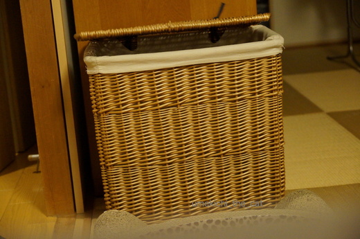
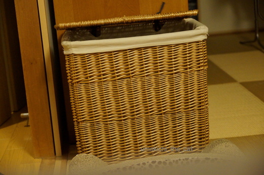

誰にも「言い」ませんよ〜 [梅吉]
足取り軽く走ってきた梅吉さん。
大好きな新聞の入ったバスケットにイン！
フタは頭でこじ開けていました・・・・
おしっぽが手前にびょ〜んと伸びてます！
いつまでもゴソゴソしているからフタが下がってきました。

新聞にアタック！！なかで活躍している気配。
衝撃でフタが完全に閉りそう・・・
あ、
やっぱりね〜。
バツが悪いのか出てこない梅吉さんでした。
![[猫]](https://blog.ss-blog.jp/_images_e/101.gif) みてた？だれにもいわんといて〜
みてた？だれにもいわんといて〜
バスケットごとひっくり返ったなんてだれにも言いませんよ。
見てもらうけど・・・ヾ(*ΦωΦ)ﾉ
 ↑ガブッと一押し↑
↑ガブッと一押し↑
外は寒いけれどお日様が当たるとあったかい。
大好きな新聞の入ったバスケットにイン！
フタは頭でこじ開けていました・・・・
おしっぽが手前にびょ〜んと伸びてます！
いつまでもゴソゴソしているからフタが下がってきました。

新聞にアタック！！なかで活躍している気配。
衝撃でフタが完全に閉りそう・・・
あ、
やっぱりね〜。
バツが悪いのか出てこない梅吉さんでした。
バスケットごとひっくり返ったなんてだれにも言いませんよ。
見てもらうけど・・・ヾ(*ΦωΦ)ﾉ
外は寒いけれどお日様が当たるとあったかい。
2017-01-21 08:03
nice!(36)
コメント(18)

カフェオレ色の梅吉

梅吉 2023年8月10日 永眠


梅吉と出会った譲渡会

犬猫の理由なき殺処分ゼロ
妄想広告
UMEKICHI 光

爆発的に早い！
時々攻撃的！
Thanks to Mr.Boss365
爆発的に早い！
時々攻撃的！
Thanks to Mr.Boss365

おぉ、すばらしい☆ 自分でフタを開けるんですねっ!!!
そして、転がる?! ついでに新聞結わえて、ゴミ出しもしといてくれたらエエのに(^_^;
･･･うへへ、ここにも、毛布依存症患猫さんが♡
by のらん (2017-01-21 08:14)
カゴの中に魅力的なものが！！
ちょこっと見える梅吉さんのお顔、
そして幸せそうに寝ているお顔
どちらも心が温まりますぅ～(#^.^#)
by きぃ (2017-01-21 08:49)
梅吉さんはバスケットごとひっくり返って脱出したんですね〜。
ルディはひっくり返るのが恐怖みたいで、ジャンプで出れない場合は助けを呼びます(笑)
by ルディパパ (2017-01-21 09:39)
日々 鍛えてるね(笑)
梅吉さんのボディかっこいい＾＾
by みいこ (2017-01-21 12:25)
本当に「みてた？だれにもいわんといて〜」って
表情ですね。
お目眼クリクリで可愛い(*^ー^*)
by Moon (2017-01-21 12:30)
梅吉君、新聞が好きなんですね！
もしや、格闘してると見せかけて、新聞読んで怒ってるとか…「トランプ大統領あかんわーー猫についてなんも言うてないー！」
by BillK-ko (2017-01-21 13:35)
いたずらっこ梅吉さん、バスケット生活満喫してますね(*^▽^*)
誰にも言わないからもう一回ひっくりかえってほしいにゃ～♪
寒い日は猫と一緒にぬくぬくお昼寝がいいですね^^
by ゆきち (2017-01-21 14:10)
トムとっジェリーに出てくるような典型的な罠にかかったのかと思いましたよ（笑）
by palpal (2017-01-21 15:47)
あはは、梅吉さんったら中で暴れすぎちゃったんですね( ^ω^ )
大丈夫、私はうちの大御所でこういう姿見慣れてますw
うちの場合は出窓から落ちて行くんですけどねぇ(⌒-⌒; )
by ニッキー (2017-01-21 19:02)
あああ。
バスケットインするときは倒れなかったのに。^^;
by yes_hama (2017-01-21 23:18)
猫ってなんで狭い所好きなんでしょうねーｗ
うちもこういうの大好きみたいで
場所の取り合いになってますｗｗ
by sumi-cyan (2017-01-22 00:09)
むふふふ
しーっかり見ちゃいましたよ〜〜^m^
大丈夫、誰にも言わないよｗｗ
じっくり見たけどね（笑）
by リュカ (2017-01-22 11:51)
ひっくりかえりそうなときに、しゃしんとってないで
おさえてや〜
ん？
おさえてんか〜
かな？(^^;
by も〜 (2017-01-22 15:11)
のらんさん＞いつもはバスケットの上にのって蓋を開けようと必死なのですが
（自分の体重で開くわけない。笑）この日は正面から、そして勢いで開けていました。
猫もニンゲンも勢いが大切やな！と思った瞬間。
毛布依存症は他の依存症と合わさって持病となりました・・・
きぃさん＞かごのなかの生物（笑）、魅力的なんですが
じっとみているとびょ〜んと飛び出て攻撃してくるので油断なりません！
寝ているときは天使・・・なんですけどねー。
ルディパパさん＞ルディくんの細い足、
変な場所でジャンプしたら折れてしまいそうで怖いです。
どうぞ、助けてあげてくださいね〜。
梅吉は多少転がろうとジャンプしようと大丈夫（今の所）。
それでも時々助けを求めて来ます。甘えん坊なだけですけどね！
みいこさん＞日々自分の限界を越えようと頑張る梅吉です。
最近は「梅吉締まってかっこええやん」と家庭内で噂になってます。笑
Moonさん＞暗がりで映る動物の目は黒目がちで可愛いですよね〜。
でもこんな可愛い目をしながらバスケットの中から飛びついて来ました。
カメラ落としそうになったわ・・・・
BillK-koさん＞梅吉は新聞Love。かじってよし乗ってよし。
お腹や肉球スキャンで情報も読み取ってますね〜
トランプさんについては
「あのおっちゃんなんやすかんねん。わしのけいろのまねして
わしにあこがれるのもたいがいにしてや・・・・」と言っております。（多分＾＾）
ゆきちさん＞そうそう飼い主ももう一度ひっくり返ってほしい。
バスケットから無様に転がり出る梅吉を写真に収めたい・・・・
愛猫の危機をカメラに収めて喜ぶなんて
ちょっと悪魔に魂売った気にもなりますが
困っている顔って特別に可愛いんですよね〜)^o^(
palpalさん＞トムとジェリー大好きでした。
あのコーナーを走って回ろうとして、ジャジャジャジャジャーっと
から走りする様は「おお、実写版！」と感激でしたよ。
by ちぃ (2017-01-22 17:33)
ニッキーさん＞大御所様は出窓から・・・･( °ω° )
大御所様といえども（失礼！）ちゃんと着地しますよねー。大丈夫ですよねー・・・
yes_hamaさん＞私もひっくり返るならインするときかなーと思ってました。
本にゃんもびっくり！だったようです。
sumi-cyanさん＞たくさんのにゃんさんがいると毎日どこかで
楽しいことが起きていそうですね〜。
リュカさん＞ふふ、わたしもリュカさんも言いふらしたりしていませんよね〜ww
も〜さん＞大正解！そして見事に梅吉の気持ちを汲み取っていらっしゃる・・・
梅吉もカメラ片手のおかーさんにはなれっこで
「しゃーないな。かなわんわほんまに・・・」と思っているでしょう。笑
by ちぃ (2017-01-22 17:52)
躍動感あふれるレポートでした（笑）
バスケットごとひっくり返して、出るとは賢い梅吉さんでした。
by kiki (2017-01-22 22:11)
最後の写真、めっちゃ癒されますわ～(^_^)
by よーちゃん (2017-01-23 00:23)
kikiさん＞バスケットはひっくり返したのか、ひっくり返ってしまったのか・・・笑
細かいことを気にしないとなかなかのイリュージョンでした。
よーちゃんさん＞寒い日が続いているからなのかお日様に当たると
本当に気持ちの良さそうな顔をします。
来週末は節分、冬の寒さももう少し・・・と思いたいです。
それにしてもさぶっ！
by ちぃ (2017-01-23 13:31)